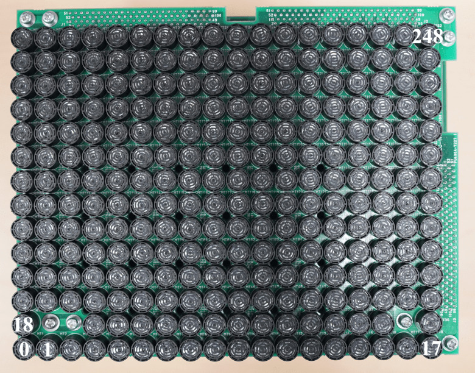
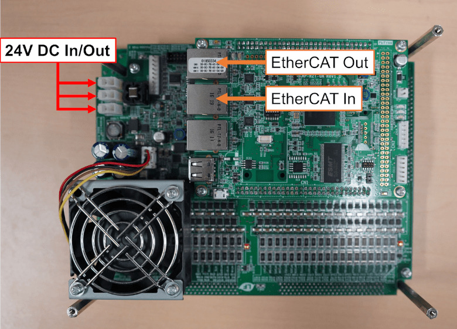
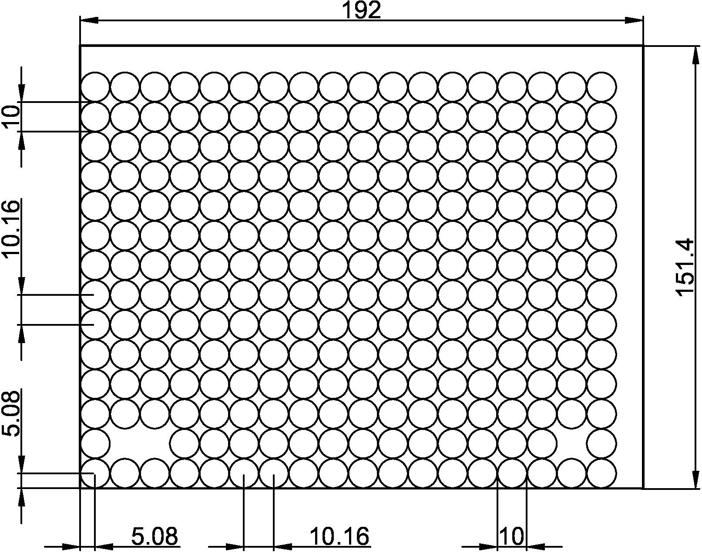

コンセプト
SDKを構成する主なコンポーネントは以下の通りである.
Controller- コントローラクラス. AUTD3に対する全ての操作はこのクラスを介して行う.Geometry- デバイスの位置関係を管理するクラス.Deviceのコンテナ.Device- AUTD3デバイスに対応するクラス. デバイスが現実世界でどのように配置されているかを管理する.Transducerのコンテナ.Transducer- 振動子に対応するクラス. 振動子が現実世界でどこにあるかを管理する.
Link- クライアントソフトウェアとデバイスとのインターフェース.Gain- 各振動子の位相/振幅を管理するクラス.STM- Spatio-Temporal Modulation (STM, 時空間変調) 機能を提供するクラス. 各振動子の位相/振幅データの時間列を管理する.Modulation- AM変調機能を提供するするクラス. 変調データの時間列を管理する.Silencer- 静音化処理を管理するクラス.
ソフトウェアの使用方法は以下の通りである.
まず, 現実世界のAUTD3デバイスの配置を指定し, どのLinkを使用するかを決め, Controllerを開く.
次に, Controllerクラスを介して, Gain (またはSTM), Modulation, Silencerデータをデバイスに送信する.
送信されたデータに基づいたPWM信号が振動子に印加される. 信号が生成されるまでの流れは以下の図の通りである.

Gain/STMで指定された振幅データは, Modulationで指定された変調データと順次掛け合わされた後, Silencerに渡される.
Gain/STMで指定された位相データは, そのままSilencerに渡される.
Silencerは, これらのデータを静音化処理1する.
最後に, Silencerで処理された振幅/位相データに基づきPWM信号が生成され, 振動子に印加される.
なお, 振幅/位相データ, 及び, 変調データはすべてである.
AUTD3デバイス
以下にAUTD3の前面と背面写真を載せる.


AUTD3は一台あたり249個の振動子から構成されている2. SDKからはこの全ての振動子の位相/振幅をそれぞれ個別に指定できるようになっている. AUTD3の座標系は右手座標系を採用しており, 0番目の振動子の中心が原点になる. x軸は長軸方向, すなわち, 0→17の方向であり, y軸は0→18の方向である. また, 単位系として, 距離はmmを採用している. 振動子はの間隔で配置されており, 基板を含めたサイズはとなっている.
以下に振動子アレイの寸法を載せる.

さらに, AUTD3は復数のデバイスをデイジーチェインで接続し拡張できるようになっている. PCと1台目のEherCAT In をイーサネットケーブルを繋ぎ, 台目のEherCAT Outと台目のEherCAT Inを繋ぐことで拡張アレイを構成できる. この時, イーサネットケーブルはCAT 5e以上のものを使用すること.
AUTD3の電源はの直流電源を使用する. 電源についても相互に接続でき, 電源コネクタは3つの内で好きなところを使って良い. なお, 電源のコネクタはMolex社5566-02Aを使用している.
NOTE: AUTD3は最大でデバイスあたりの電流を消費する. 電源の最大出力電流に注意されたい.
詳細はSilencerを参照.
からネジ用に3つの振動子が抜けている. 態々この位置にネジ穴を持ってきたのは, 複数台並べたときの隙間を可能な限り小さくしようとしたため.